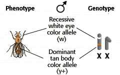

Sex-Linked Inheritance Problem Set 2
Problem 2: Predicting the genotype of a male fly
Tutorial to help answer the questionThe alleles for eye color and for body color are on the X chromosome of Drosophila, but not on the Y. Red eye color (w+) is dominant to white eye color (w), and tan body color (y+ ) is dominant to yellow body color (y).
What is the genotype of a tan-bodied, white-eyed male?
Tutorial
Phenotype and genotype of male
|
His genotype is Xwy+ Y.
|
 |


University of Arizona
Updated: July 15, 1999
Contact the Development Team
http://www.biology.arizona.edu
All contents copyright © 1996-99. All rights reserved.